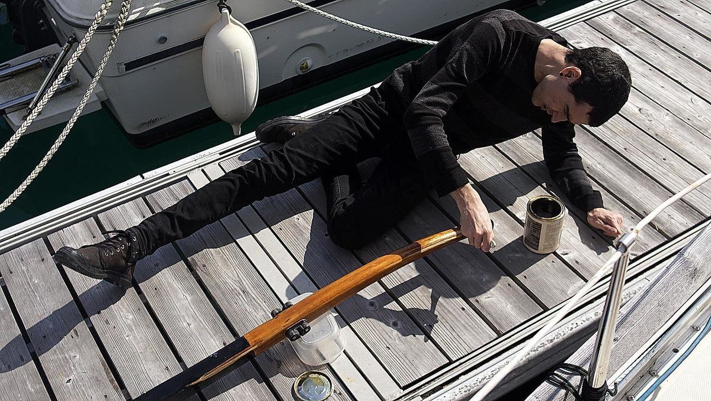

wood upkeep
Most boats have teak rails or accessories, or marine plywood(interior). Teak does not rot, but it is a very expensive and an increasingly rare material. We don't recommend buying new exotic hardwoods, even if they last longer, because they often come from endangered forests. In all cases, using reclaimed hardwoods is the best thing to do. When boats are too old, they're stripped for parts and are a good source of used hard woods.
Most interior wood ought to be treated—especially marine plywood—so they don't absorb moisture. Marine ply is usually pre-treated to prevent the wood from rot and decay, but the wood still needs to be sealed. All boats suffer leaks eventually, and so it is necessary to take steps to protect the wood to make it last. If replacing a wall, coat the wood with multiple layers of epoxy(on the seam too) before applying multiple coats of varnish for UV protection. For outside wood, apply at least 8 coats of varnish to make sure that it lasts. Add more coats after a few hours, while it hasn't dried, that way you don't have to sand it to get the new coat to adhere (this means having to do many coats very fast though).
